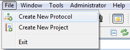
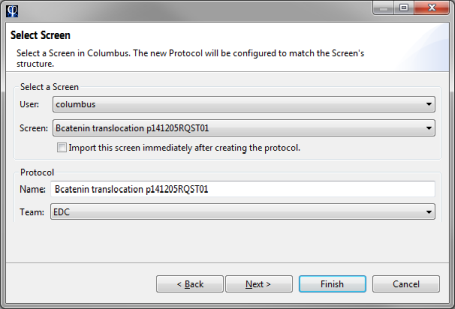
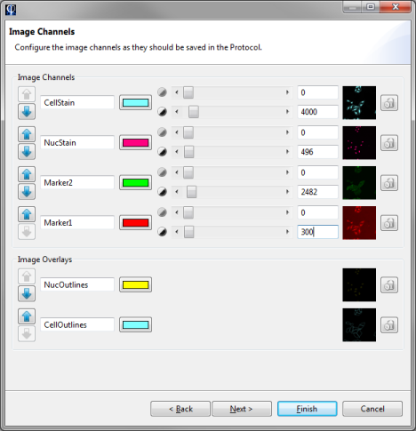
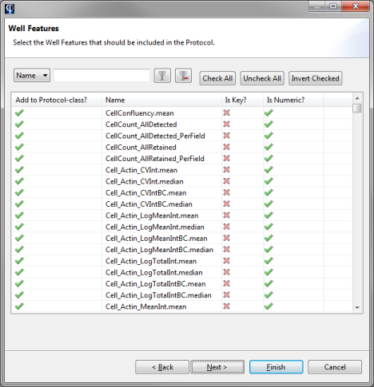
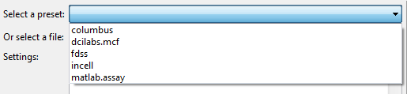
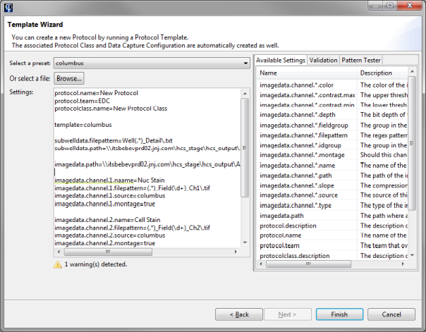
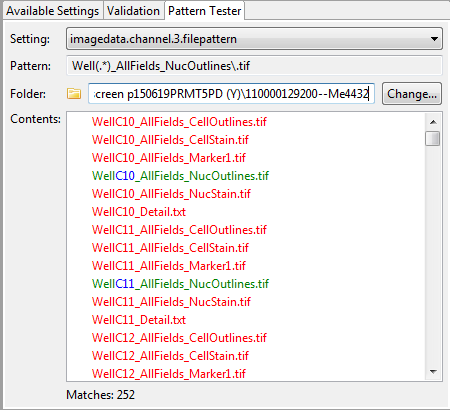

A protocol (and by extension, a protocol class) is the parent object where you will import experiments and plates into. It represents the execution phase of a screening assay, and contains a number of settings related to the instrument used for reading out the plates, and the image analysis used to identify the contents of the plates.
To create a new protocol, select File > Create New Protocol.

Setting up a protocol can be a difficult task, requiring careful configuration and some technical knowledge. Phaedra offers several functions to make this process easier:
The Columbus Wizard is an intuitive way to set up a new Columbus-based protocol. It will automatically inspect the data that is stored in Columbus, and suggest an appropriate protocol configuration for you.
Start by selecting a screen in the list of available screens. Phaedra will start inspecting the data in the selected screen and construct a skeleton for the new protocol. If you select an invalid screen (for example, a screen without plate measurements or image analysis results), an error message will be displayed.
Enter a name for the new protocol, and select the team that will own the new protocol.

In the next screen, you can tune the settings related to image channels.

In the next screen you can select which well features to define in the protocol class. By default, all well features that have been found in the image analysis result set, will be added.

To unselect a feature, click on the green tick sign to the left of the feature. To mark a feature as a Key feature, click on the red cross sign in the Is Key column.
In the final screen, you can select which subwell features to define in the protocol class. This process is very similar to the previous screen, for well feature definitions.
After clicking Finish, the new protocol is created and will be ready for importing plates into.
Phaedra contains a number of protocol templates, which are a kind of blueprints for new protocols. These templates already contain technical settings for dealing with a particular combination of instrument and image analysis program.

When you select one of these templates, its contents will be shown in the area below. Any problematic settings will be underlined in yellow (warnings) or red (errors). Hover your cursor over the problematic line to get more information about the problem.

Some of the settings in the template are regular expressions, for example file name patterns. These settings can be tested by selecting the Pattern Tester tab to the right of the screen.
Using this tool, you can test the correctness of a pattern by evaluating it on a set of files.

First, select the setting you want to test. In the above image, the file pattern for image channel 3 is being tested.
Next, select a folder containing images. Phaedra will scan the folder and highlight the files that match the pattern in green. In addition, if your pattern contains groups (surrounded by brackets), those will be highlighted in blue.
When all settings have been set, click Finish to create the new protocol.